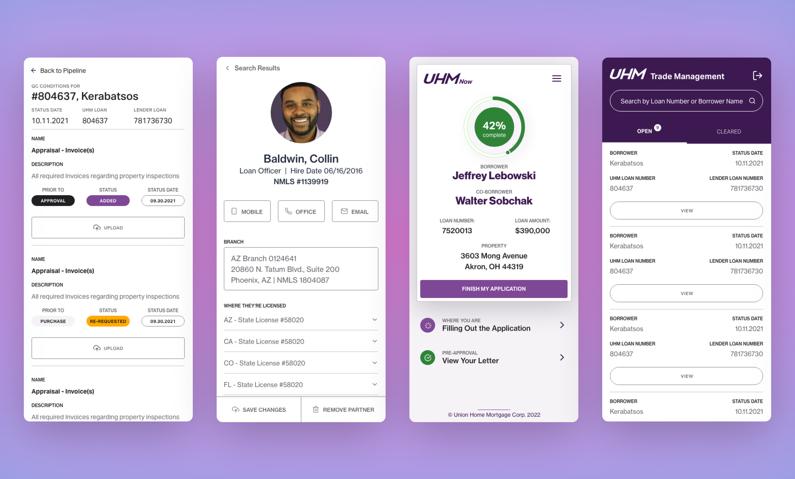

Terafina
A rebuild that started at atomic elements and let the decisions scale. Completion rates improved 12%.
View projecthobbs.design v5 · foundations
One source of truth. Raw values live in the subatomic layer, semantic roles alias them, components consume roles. Every spacing decision lands on an 8px grid, and every color pairing on this page passes WCAG AA. See the type scale
Some of it is taste.
Systems that hold up under pressure.
Accessibility is how I structure decisions.
Large body copy carries introductions and case study leads.
Body copy at sixteen over twenty-four. Hierarchy is built through size and opacity, never through hue, and, with one display exception, never weight. Inline links are underlined, because color alone is not an affordance.
--text-size-display: var(--typography-font-size-80)
One accent. The 500 red is display-scale only; body-size links use the 600,
which clears 4.5:1 on the page background. Muted text sits at 60%. The old
40% failed AA and survives only as disabled.
Strict 8px foundation. No 4s, no 12s. If a gap isn't divisible by eight, it isn't in the system.
The project row is the first molecule. The nav at the top of this page and the footer below it are the first two organisms. Nav and project row carry their own component tokens; the footer runs on semantic tokens alone, because none of its values needed a component-level name.
A rebuild that started at atomic elements and let the decisions scale. Completion rates improved 12%.
View projectA system built to be adopted, not interpreted. Automated tooling held every color pairing to WCAG contrast.
View project